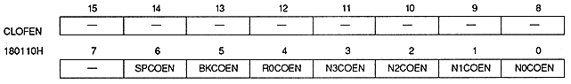
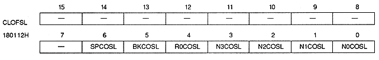
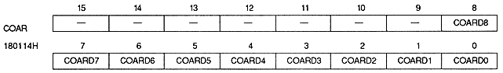
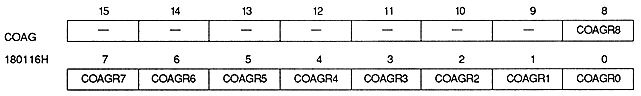
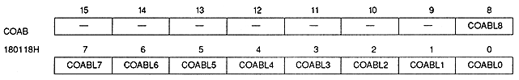
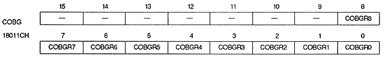
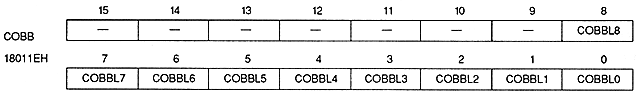

Return to previous page ｜ Return to menu ｜ Go to next page
Color offset enable

Color Offset Select

Color offset A (RED)

Color offset A (GREEN)

Color offset A (BLUE)

Color offset B (RED)
Color offset B (GREEN)

Color offset B (BLUE)

Return to previous page ｜ Return to menu ｜ Go to next page